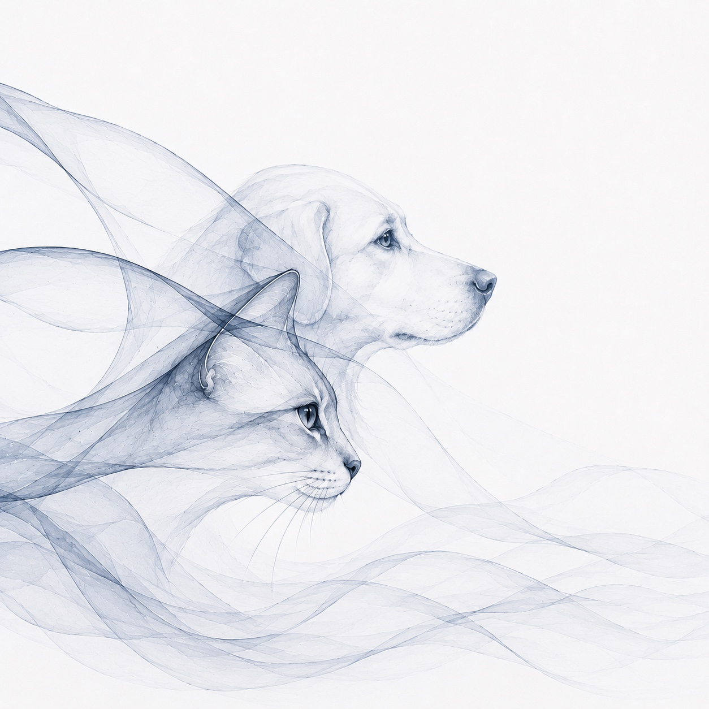

Preserve structure
Story, character, medical details, adoption status and media come together in one consistent AnimalProfile file.

Free open-source platform for animal shelters and rescue organizations
Enter animal data once and create everything that matters from it. GraceWays brings information and media together in one consistent record — ready for adoption work, websites and multilingual social media.
Free to use worldwide. The organization remains in control of its data.
About GraceWays
Information about one animal is often scattered across messages, notes, spreadsheets, images, videos and different devices. GraceWays brings it together through an easy-to-use form and saves it as an open, permanently readable .md file (Markdown).
The organization can retain the animal's data and related media in its own files. Consistently structured records can also be searched and filtered — for example, to find every animal still waiting for a home.
Story, character, medical details, adoption status and media come together in one consistent AnimalProfile file.
Confirmed facts can become Heart Notes, adoption profiles, website content and social posts in selected languages.
The record belongs to the organization. It can be exported as readable Markdown and remains usable without GraceWays.
Consistent fields make records searchable and filterable by status, species, location or medical information.
Images, videos and audio stay connected to the correct animal and can be saved with the Markdown file as one complete package.
Multiple records could automatically produce posts for all unadopted cats or animals needing foster homes. Websites could show focused views — such as all male cats, dogs in one location or animals currently seeking adoption.
Authorized people can contribute to the same animal record: foster homes add observations, volunteers upload images, videos or voice notes, and veterinarians add medical information. The animal ID connects every contribution to the right animal; media is placed in the intended image and media folders. The organization reviews and approves content before publication.
How GraceWays works
The current prototype runs directly in the browser — without an account or server. The organization decides when and where the record is saved.
Add story, character, health and adoption details to the universal form. Images, videos and audio can be added by drag and drop.
Country, organization, collection and sequence number create an ID such as EL-SC-BC-007. In this prototype the sequence is unique only within the same browser and device; a future shared system will allocate IDs centrally.
Text entries are temporarily stored only in this browser. The live Markdown preview grows immediately; internal fields are clearly marked.
“Markdown only” saves one .md file. “Download complete record” creates a ZIP containing Markdown, images, videos and audio.
The browser normally saves the file in Downloads or asks for a destination. The ZIP can then be extracted into the organization's chosen folder.
The record folder can be opened as an Obsidian vault. Markdown remains locally readable, searchable and filterable by its properties.
What the download contains
sissi-graceways.zip
├── sissi.md
├── images/
│ ├── sissi-main.jpg
│ └── sissi-02.jpg
└── media/
├── video-01.mp4
└── audio-01.mp3
The .md file contains the structured animal data. Media remains in ordinary file formats and is linked to the record through its file paths.
Obsidian is optional
No additional application is required to enter animal data, add media and download a completed record. GraceWays structures the information, assigns media to the correct folders and creates the package.
Obsidian becomes useful when an organization wants to search many stored records together on its own computer. It can open the existing record folder as a vault and recognize the metadata at the beginning of each GraceWays file as properties.
Its optional “Bases” feature can turn those properties into tables, cards and filtered views — for example, all unadopted cats or all animals needing foster care.
Learn about optional Obsidian features →Important: Uploaded media is permanently saved only after the complete record has been downloaded as a ZIP file. GraceWays is not a backup system; the organization's folder should be backed up regularly to a second storage location.
Open source · built together
GraceWays invites developers to help build a free, modular platform for shelters and rescue organizations. Contributions can span frontend, backend, data models, media management, translation, accessibility, privacy and documentation.
The vision is a family of complete full-stack websites built on one shared open foundation: animal records, user roles, shared media storage, adoption, sponsorship, multilingual content and automated publishing. Every organization keeps its own domain, design, identity and data.
This prototype begins with the universal record and local export. Future stages will connect authorized contributors, animal records and publishing workflows into complete organizational platforms. Every shared improvement can then benefit many organizations.
The vision
Each heart represents an independent organization. Select it to discover its animals, projects and ways to help. No organization gives up its identity — yet all can work from a shared, open foundation.
“We connect people so that more animals can be saved.”
SunCats is the first node in this network. More rescues, shelters and helpers can join. The result is not one central organization, but a community in which everyone can contribute.
The GraceWays digital animal record
A complete digital record for different species, organizations and countries.
AnimalProfile.md
Open only the sections you need. Empty fields remain available in the universal template.
Legal information
Replace these placeholders with the details of the responsible person or organization before public release.
Email: [email address]
Phone: [optional]
A registered association or other legal entity may also need to state its legal form, authorized representative and registration details.
Check whether this information is required, especially for journalistic or editorial content.
Note: This template is not individual legal advice. Required information depends on the operator, legal form and content of the service.